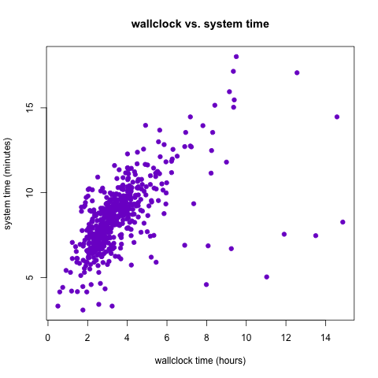
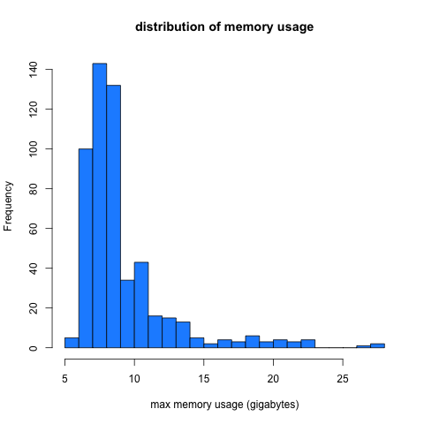
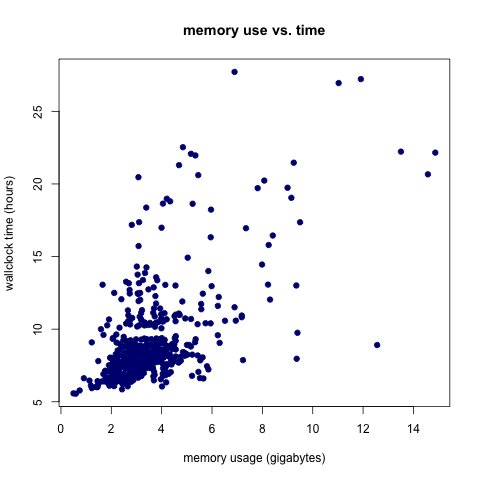

Thu 14 November 2013 | -- (permalink)
"How long did that take to run?"
I think I've been asked that question approximately one bazillion times in the past few years. Unsurprising: I'm working in computational biology research. Whether we're developing our own methods or using our computing resources to analyze data for a collaborator, it's important to have some ballpark computational efficiency figures.
But whenever somebody asks me that, usually my response is something like "errr, uh, yeah, hang on one second...I know I have those logs somewhere...wait, did I stick the logs in this folder or that folder? Maybe it'll be easier to search for my 'job completed' email...Ah, here it is...no, wait, that's from that job that failed...argh, I'll have to get back to you." WORST RESPONSE TO "how long did that take to run?" EVER. Advisors need runtimes for grants. Methods developers need runtimes so we can say our software runs faster than their software. And it shouldn't be hard to get that data. So, last week, I decided enough was enough: I need a better system for keeping track of computational efficiency statistics. What I came up with was a little unconventional: I wrote a script to programatically scrape the efficiency stats for a big batch of jobs from my email account.
I chose to develop a method for getting the data from emails, rather than, say, extracting the timing information from log files generated by the jobs, for a few reasons:
-
By default, I get an email notification when one of my batch jobs finishes, so no extra coding is required (i.e., I don't have to remember to add logging lines in my scripts if the software I'm using doesn't do it automatically). Our department uses the Sun Grid Engine scheduling system (which I guess recently became Oracle Grid Engine) on its computing cluster - the "job complete" email notification feature is part of SGE. An SGE job completion email looks like this:

-
As shown above, the email notification is always formatted the same way and includes the exact same information (timing, memory use, whether the job exited normally or threw an error, etc.), no matter what the job is doing.
-
The fewer files I need to keep track of on a hard drive, the better. I'm pretty bad at reining in the folder hierarchy for large projects, and having to organize log files on top of everything else would be even more challenging.
-
It seemed like a fun side project and a good excuse to write a little Python :)
I'll illustrate my path to getting all the runtime and memory statistics using a project I worked on a few weeks ago as an example. For this project, I needed to run transcript assembly software on 538 samples - so, one job for each sample. Each job needs to consist of one bash script that will be submitted to the computing cluster and run when there are enough resources available. So I wrote a wrapper script to automatically generate and submit the 538 bash scripts I needed. Here's where the first trick comes in:
trick #1: keep your email notifications organized (it's easy!)
In the wrapper script I wrote (the one that submits all the jobs), I had my notification emails sent to an informative alias. Gmail has this cool feature involving the + operator: assuming you own yourname@gmail.com, mail sent to yourname+[ANYTHING]@gmail.com will also get delivered to you. So for this project, I had all the notificiations sent to myemail+projectname@gmail.com, and then I set up a filter so that everything sent to that alias would get marked as read, archived, and labeled. Already this makes the data collection easier (if only by facilitating the "page-through" process for the emails).
So after all the jobs finished, I had 538 emails (one for each job/sample) in my account that were marked as belonging to this project. Since each job was analysis of a different sample, there was some variability in runtimes and memory use, but looking through all the emails individually to get a sense of the efficiency of this software run on this particular dataset was going to be a huge pain. The key was to interact with these emails programatically instead of manually, which was the second trick:
trick #2: programatically interact with your email
For this I used context.io, a library that gives you the tools to write code that gets email data from authorized accounts. I used the Python API, but there are versions available in other languages as well. This is actually a pretty cool piece of software and I can imagine a hundred other uses for it, but for this particular application, I just used it to download the contents of all the messages sent to myemail+projectname@gmail.com. With the context.io library, this only takes a few super-sensible lines of code.
The rest of the analysis was pretty straightforward: after getting all the email data downloaded and parsed, and checking to make sure all the jobs had exited normally, I had a nice dataset of runtime and memory statstics. I wrote those stats into a tab-separated text file, which I then loaded into R so I could do some quick numerical summaries and make some plots! (One day I will learn matplotlib and pandas, but today is not that day. Also...I think R graphics are prettier.)
On to the stuff that's actually interesting: the statistics! My transcript assembly jobs took, on average, 3.57 hours (3 hours, 34 minutes), wallclock time, variance 2.99. The distribution was a little right-skewed, with one job taking more than 14 hours to finish.

Wallclock time is important, but perhaps more informative about the true computational efficiency of these jobs is the system time. My grossly simplified understanding of system time is that it's a measurement of how long the computer's OS spent actually doing the job. Other processes running on the machine might affect the wallclock time of a job, but they won't affect the system time. Here we see that for my transcript assembly jobs, the system and wallclock times seem positively correlated (and in fact we have r=0.597) but that some of the jobs with high wallclock time had reasonable system times, indicating that they took a lot of "real" time because of other processes running on the same machine they happened to run on.

I also looked at memory use, as measured by the maximum amount of memory used by the job at any point during its run. The mean memory footprint for these jobs was 9.113 G. Like the wallclock time distribution, the memory use distribution was right-skewed with one of the jobs using 27.7 G of memory.

It appears that there is a positive relationship between wallclock time and memory use (unsurprising), but it's not as strong as I assumed it would be, particularly for the longer/bigger jobs.

The Python and R code for this analysis is available on GitHub. A generalized Python script is also available and documented, so if you have Sun Grid Engine-formatted emails you'd like to scrape efficiency statistics from, you can use that script. All you need to do is download a context.io API key (it's free) and set up your email account to work with that. Remember to store your "consumer_key" and "consumer_secret" values in column 2 of a tab-separated file called "client_secrets" located in the same directory as the python script. This probably goes without saying, but keep that file private (i.e. DO NOT commit it to GitHub) or your email account will be hackable.
My hope is that a generalizable pipeline like this one will make it easier for me to quickly answer the (formerly-dreaded) question "how long did that take?"